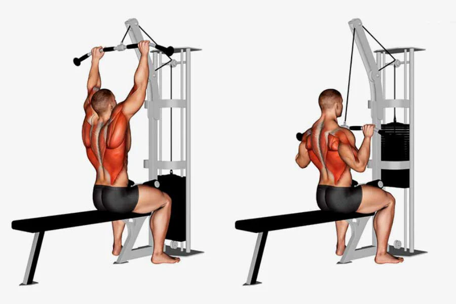

Day 1: Chest & Back
Flat Bench Press – 4 sets x 8–12 reps

Lat Pulldown (Wide Grip) (Back) – 4 sets x 8–12 reps

How?
Incline Dumbbell Press (Chest) – 3 sets x 10–12 reps
Seated Cable Row (Back) – 3 sets x 10–12 reps

Incline Bench Dumbbell Fly (Chest) – 3 sets x 12–15 reps

Dumbbell Rows (Single Arm) (Back) – 3 sets x 12–15 reps Each Arm